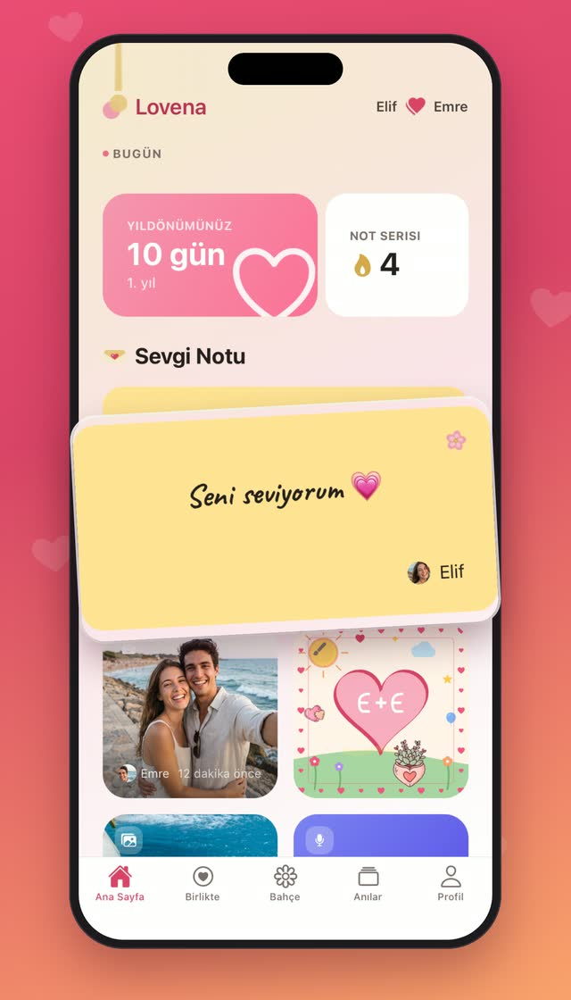
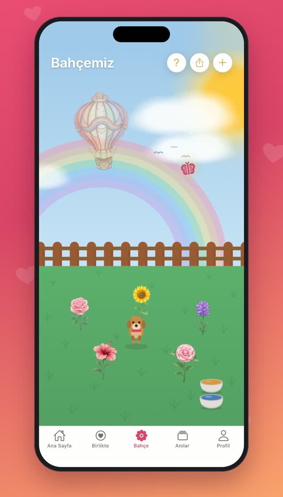
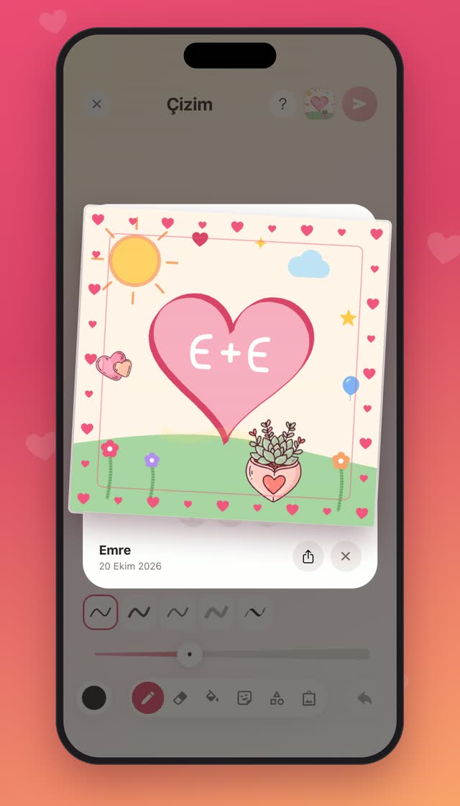
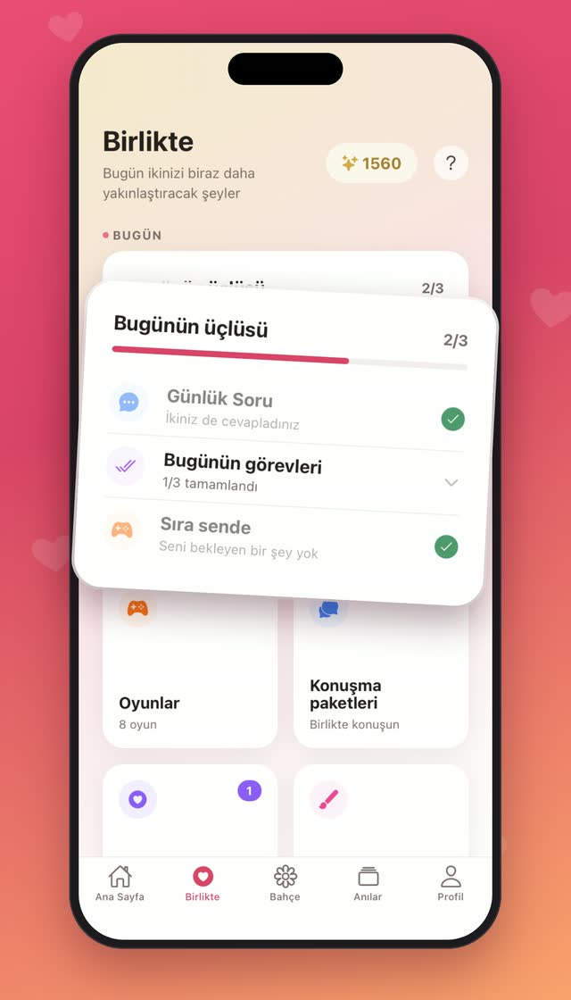
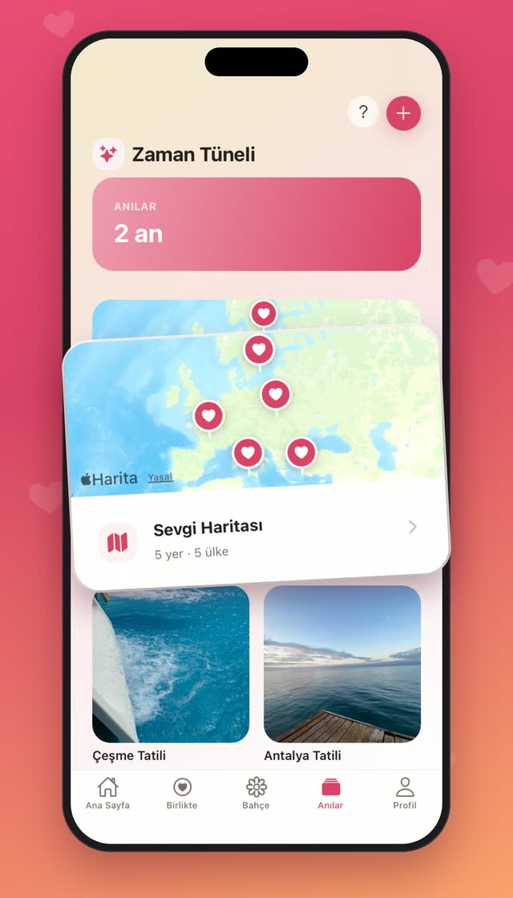
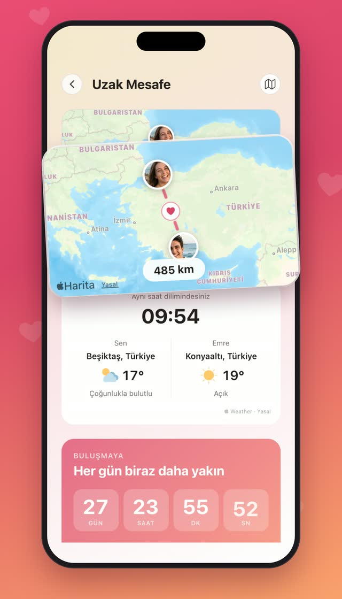

sadece ikiniz için
İki kişinin kurduğu küçük bir dünya.
Onun ana ekranına düşen notlar, birlikte suladığınız bir bahçe, her akşam bir soru, iki kişilik oyunlar ve hatırlamaya değer her gün. Özel, sıcak ve yalnızca sizin.
Çok yakında App Store ve Google Play’de
- Yalnızca ikiniz
- Reklam yok
- 10 dil




Bahçemiz
İkiniz de uğradıkça büyüyen bir bahçe
Bir çiçek dikin, birlikte sulayın ve günler içinde açışını izleyin. Orada küçük bir dost da yaşıyor; ikiniz de uğradıkça biraz daha mutlu.
- Çiçekler ikinizin emeğiyle açar
- Bağınızla birlikte büyüyen bir evcil dost
- Topladığınız çiçekler ortak vazonuzu doldurur

Sevgi Notu ve Çizim
Küçük sözler, tam görebileceği yerde
Bir sevgi notu yaz, onun ekranında belirsin. Fırçalar, çıkartmalar ve çerçevelerle bir şey çiz; bir sesli not ya da gününden anlık bir fotoğraf gönder.
- Notlar ve çizimler widget’ta görünür
- Sesli notlar ve anlık fotoğraflar
- Birbirinize çizin ya da birlikte çizin

Günlük Soru ve Konuşun
Her gün bir soru, bir de hep ertelediğiniz konuşmalar
Günün sorusunu kendi başına cevapla, sonra onun ne yazdığını gör. Konuşma paketleri her gün bir soru açar: derin sohbetlerden hayallere, paradan köklere ve şükrana.
- Kendi cevabını yaz, onunkini gör
- Her gün yeni bir gün açan paketler
- Birbirinize yaklaşmak için 30 günlük program

İki kişilik oyunlar
Birlikte oynayın, ayrı şehirlerden bile
İki telefon için yapılmış kısa oyunlar: bazıları birbirinizi daha iyi tanımak için, bazılarında ancak takım olarak kazanırsınız.
Bu mu Şu mu
Hızlı seçimler, şaşırtan cevaplar.
Çift Testi
Birbirinizi gerçekten ne kadar tanıyorsunuz?
Sevgi Yapbozu
Bir fotoğrafı onun çözeceği bir yapboza çevir.
Birlikte Kule
Sırayla kat ekleyin, cesaretiniz yettiğince yükseğe.
İki El
Tek tahta: biriniz taşır, öbürünüz çevirir.
Şafakta Buluş
Gündüz ile Gece, yirmi bölüm boyunca yolu birbirine tarif eder.
Anılar ve Özel Günler
Hikâyeniz, tek bir yerde
Albümler, bir zaman çizelgesi ve gittiğiniz her yerin sevgi haritası. Geleceğe bir zaman kapsülü mühürleyin, bir daha hiçbir yıldönümünü kaçırmayın.
- Albümler, zaman çizelgesi ve sevgi haritası
- Seçtiğiniz gün açılan zaman kapsülleri
- Doğum günlerine ve yıldönümlerine geri sayım

Uzak Mesafe
Kilometrelerce uzakta, yine yan yana
Birbirinizin şehrini, aranızdaki mesafeyi, oradaki saati ve havayı görün; yeniden buluşacağınız güne geri sayın.
- İki saat ve iki gökyüzü tek bir kartta
- Yalnızca şehir paylaşılır, tam konum asla
- Bir sonraki buluşmaya geri sayım

Sözümüz
Baştan özel tasarlandı. Yalnızca ikiniz.
Lovena bir sosyal ağ değil. Akış yok, takipçi yok, odada sizden başka kimse yok.
Yalnızca ikiniz
Paylaştığınız her şeyi siz ikiniz görürsünüz, başka kimse görmez.
Reklam yok
Lovena’yı reklamverenler değil, onu sevenler ayakta tutar.
Asla satılmaz
Verileriniz kimseye satılmaz, kâr için kimseyle paylaşılmaz.
Yapay zekâ eğitimine yok
Notlarınız, fotoğraflarınız ve cevaplarınız asla yapay zekâ eğitmek için kullanılmaz.
Sorular
Bilmekte fayda var
Lovena ücretsiz mi?
Evet. Lovena’yı indirmek ve her gün birlikte kullanmak ücretsiz. Plus ve Gold isteğe bağlı; tek bir abonelik ikinizi birden kapsar.
Plus ve Gold neler katıyor?
Zaten sevdiğiniz her şeyden daha fazlası: daha çok konuşma paketi ve oyun, bahçeniz için daha çok çiçek ve vazo, fotoğraflarınızı, sesli notlarınızı ve anılarınızı daha uzun saklamak için daha çok yer. En cömerdi Gold.
Partnerimin de uygulamayı indirmesi gerekiyor mu?
Evet, Lovena iki telefon için yapıldı. Biriniz alanınızı kurup bir davet bağlantısı ya da kodu gönderir, diğeri onunla katılır. iPhone ve Android birbirine sorunsuz bağlanır.
Hesabımızı silersek verilerimize ne olur?
Hesabın hemen silinir. Birlikte oluşturduklarınız, diğeriniz indirebilsin diye 30 gün saklanır, ardından dosyalarıyla birlikte kalıcı olarak silinir.
Lovena hangi dilleri konuşuyor?
Şimdilik on dil: Deutsch, English, Español, Français, Italiano, Português (Brasil), Türkçe, 한국어, 日本語, 繁體中文. Her biriniz uygulamayı kendi dilinde kullanabilir.
İkinize ait dünya neredeyse hazır
Lovena çok yakında iPhone ve Android’de.
Çok yakında App Store ve Google Play’de